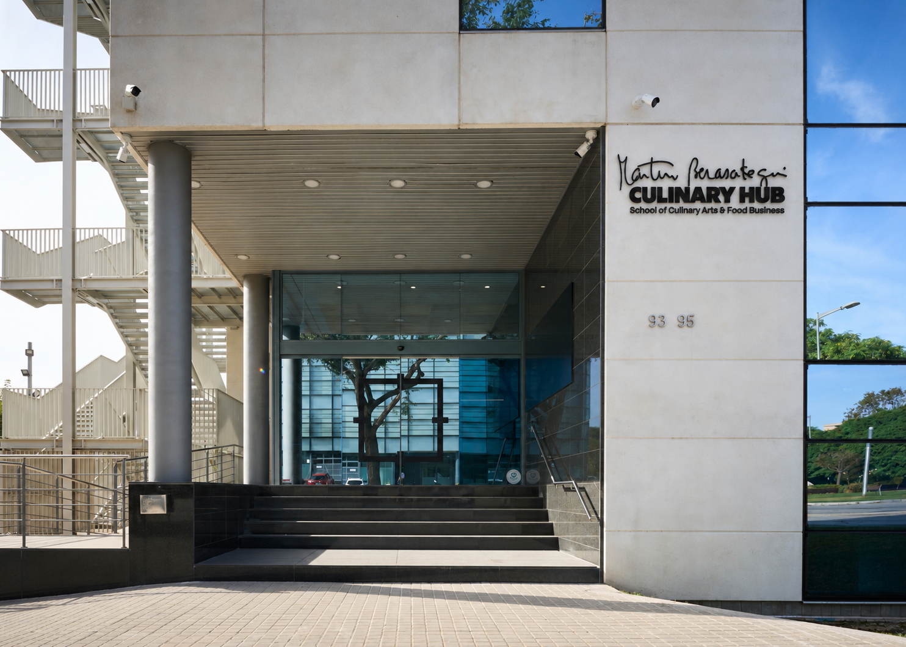
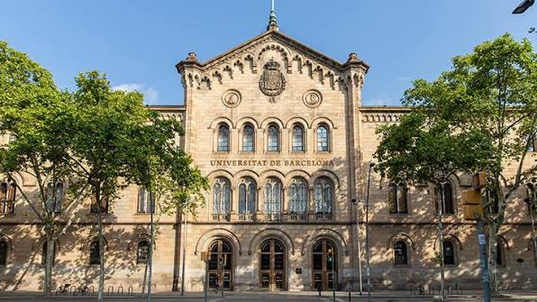
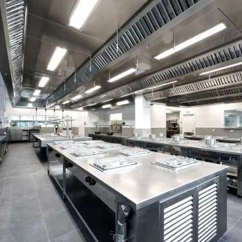
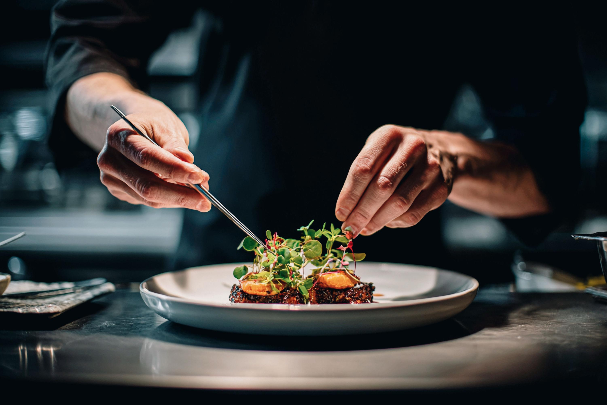
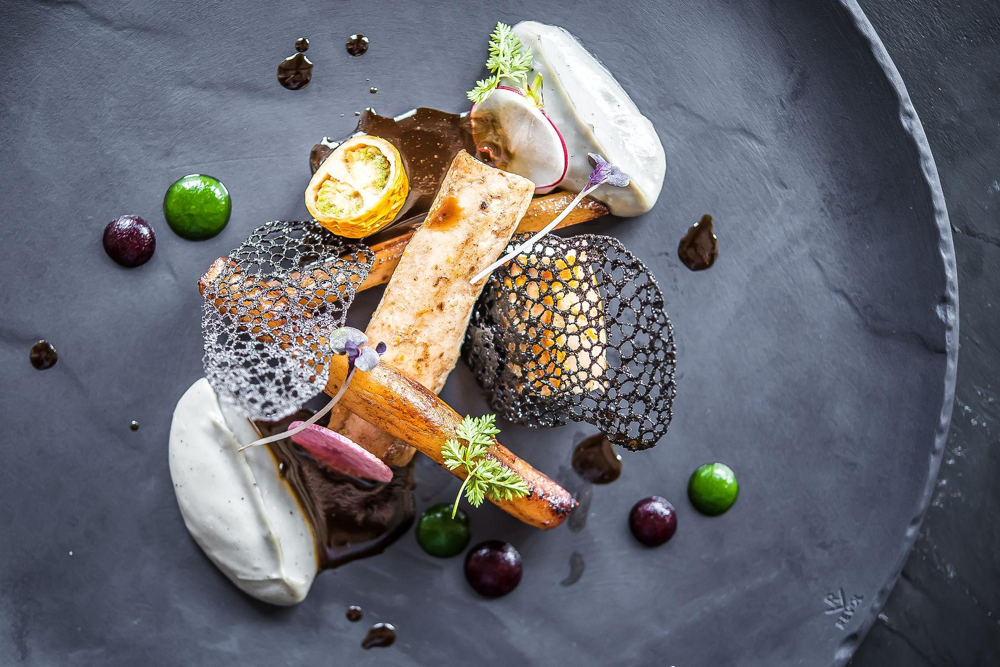
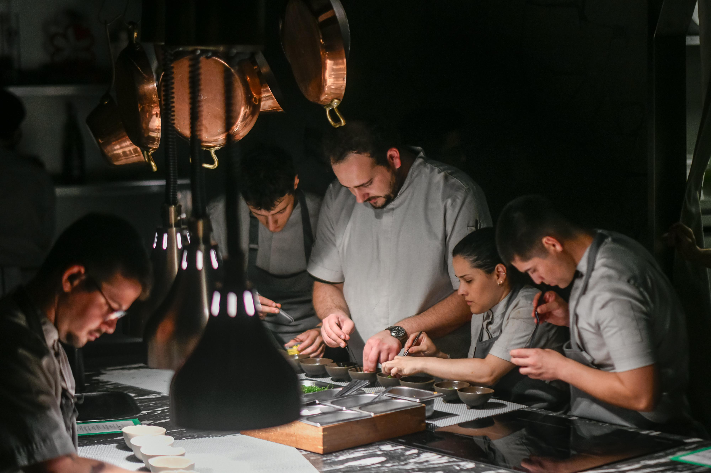

Una institución que te acompaña
Descubre el proyecto educativo, su estructura institucional y las entidades que respaldan la formación.
Conocer la instituciónMARTÍN BERASATEGUI · BARCELONA
Una escuela con identidad propia, inspirada en la excelencia gastronómica y orientada a quienes quieren construir su futuro profesional en el mundo de la gastronomía.
Descubrir Martín Berasategui Culinary HubEXCELENCIA · TÉCNICA · CREATIVIDAD · FUTURO
EL RESPALDO INSTITUCIONAL
Conoce la institución, las titulaciones asociadas a cada itinerario formativo y los espacios en los que desarrollarás tu aprendizaje.

Descubre el proyecto educativo, su estructura institucional y las entidades que respaldan la formación.
Conocer la institución
Consulta qué titulación corresponde a cada programa y conoce sus características académicas.
Explorar titulaciones
Descubre los espacios formativos, las cocinas y las instalaciones que forman parte de la experiencia educativa.
Descubrir los espaciosDescubre los valores, la filosofía y la visión gastronómica que definen nuestra manera de entender la formación.
Cultura y FormaciónCULTURA · ESFUERZO · DISCIPLINA
Una formación que va más allá de la técnica. Aprende a través del rigor, la práctica y una filosofía de trabajo que entiende la excelencia como una actitud diaria.
Conoce la materia prima, comprende su valor y aprende a tratarla con sensibilidad, precisión y respeto.

Cuida cada detalle, trabaja con rigor y busca mejorar cada día. La excelencia se construye con esfuerzo, disciplina y voluntad de superación.

Evoluciona desde la técnica, la tradición y el conocimiento del oficio. Innova sin perder de vista aquello que da sentido a cada creación.

Aprende de los demás, comparte conocimiento y asume la responsabilidad de contribuir al resultado colectivo.
CATÁLOGO ACADÉMICO
No se han encontrado programas con esos criterios. Prueba con otra búsqueda o categoría.
COMPETENCIAS PROFESIONALES
Fórmate con el sello de Martín Berasategui y desarrolla las competencias, la visión de negocio y la experiencia necesarias para construir tu futuro profesional en el sector gastronómico.
Una formación vinculada a la excelencia, la exigencia y la pasión por la gastronomía. Una identidad que te acompaña en tu trayectoria profesional.
Técnica, creatividad, gestión, liderazgo y visión de negocio para responder a los retos reales de la industria gastronómica.
Trabaja tu marca personal, crea tu porfolio gastronómico y desarrolla la comunicación y la etiqueta profesional para mostrar todo tu potencial.
Nuestro Departamento de Carreras Profesionales te orienta en tu búsqueda de empleo y te acerca a oportunidades de desarrollo en el sector.
Tu futuro profesional también se construye a través de las experiencias, las conexiones y las oportunidades que vives.
Vive la ExperienciaEXPERIENCIA · COMUNIDAD · BARCELONA
Descubre el valor del trabajo en equipo, el intercambio de ideas y el aprendizaje con otras personas.
Conoce las experiencias, actividades y oportunidades de contacto con el entorno gastronómico que ofrece la escuela.
Explora una ciudad donde conviven cultura, creatividad, restauración y diversidad gastronómica.
Vive una experiencia que conecta formación, personas, gastronomía e industria en Barcelona, una ciudad con una identidad culinaria y cultural propia.
Empieza tu experienciaPROCESO DE ADMISIÓN
Te acompañamos durante todo el proceso para que puedas dar el siguiente paso en tu formación con confianza.